HNB u digitalnom medijskom prostoru (podatcima)
Prijedlog sustava za medijsko praćenje i analizu
2025-10-22
Digitalni medijski prostor RH
Digitalni medijski prostor sve je važniji dio medijskog prostora u Hrvatskoj.
Podatci uključuju:
- razdoblje 2021-06/2024-06
- uključuju sve javne objave (N~21mil)
- web,fb,ig,x,yt,reddit,forum,komentari
- 49 karakteristika po objavi
| platforma | ukupno_aktivnih_dana | prosjek_dnevnih_objava | medijan_dnevnih_objava | varijabilnost_objava_sd | SOURCE_TYPE | min_dnevnih_objava | max_dnevnih_objava | prosjek_dnevnih_interakcija | medijan_dnevnih_interakcija | varijabilnost_interakcija_sd | prosjek_dnevnog_dosega | medijan_dnevnog_dosega | varijabilnost_dosega_sd | prosjek_dnevnog_engagement_rate | prosjek_dnevne_viralnosti |
|---|---|---|---|---|---|---|---|---|---|---|---|---|---|---|---|
| comment | 978 | 511.49 | 428.0 | 584.85 | comment | 1 | 4596 | 0.00 | 0.0 | 0.00 | 0.00 | 0.0 | 0.00 | 0.00 | 0.00 |
| 1278 | 2090.63 | 2081.5 | 617.83 | 421 | 5881 | 229977.18 | 221522.0 | 87775.80 | 48073099.73 | 45245924.0 | 20864180.68 | 0.78 | 0.00 | ||
| forum | 661 | 2147.87 | 671.0 | 2562.42 | forum | 1 | 40927 | 0.00 | 0.0 | 0.00 | 0.00 | 0.0 | 0.00 | 0.00 | 0.00 |
| 232 | 2.12 | 2.0 | 1.43 | 1 | 8 | 577.34 | 89.5 | 5609.29 | 5773.27 | 895.0 | 56092.87 | 0.00 | 0.00 | ||
| 1153 | 1008.99 | 1029.0 | 309.57 | 1 | 2966 | 0.00 | 0.0 | 0.00 | 0.00 | 0.0 | 0.00 | 0.00 | 0.00 | ||
| tiktok | 990 | 3.86 | 3.0 | 3.59 | tiktok | 1 | 28 | 80555.52 | 21727.0 | 657303.16 | 801886.11 | 323350.0 | 4229861.11 | 6.83 | 0.00 |
| 1262 | 1222.41 | 824.5 | 923.37 | 1 | 4728 | 21052.89 | 6315.5 | 74707.64 | 973338.68 | 387709.5 | 3520957.88 | 2.72 | 0.00 | ||
| web | 1278 | 8804.82 | 9189.0 | 2031.87 | web | 4535 | 21423 | 763074.37 | 718117.5 | 349530.69 | 27884224.70 | 24229063.5 | 58008430.40 | 2.37 | 1.12 |
| youtube | 1183 | 1037.17 | 982.0 | 300.63 | youtube | 1 | 2630 | 154477.59 | 148304.5 | 104729.85 | 8593876.33 | 7400850.5 | 8739963.06 | 5.85 | 0.00 |
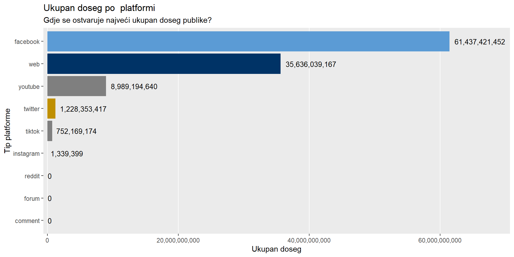

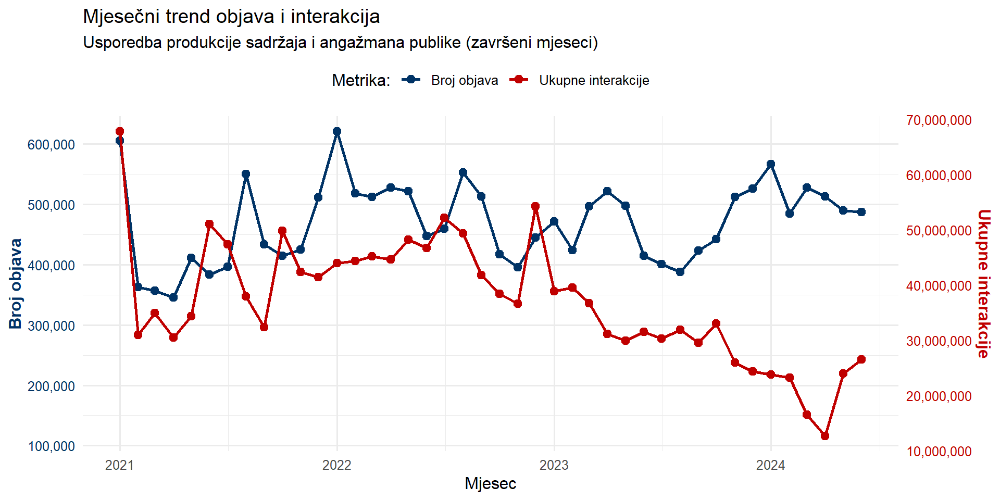
Strateška razina
Dva svijeta HNB: Stručna rasprava vs. javna arena!
Analiza 20k medijskih objava o HNB pokazuje dva različita svijeta koji se rijetko dodiruju…sve dok ih ključna tema ne prisili na to. Inflacija, od monetarnog do medijskog fenomena!
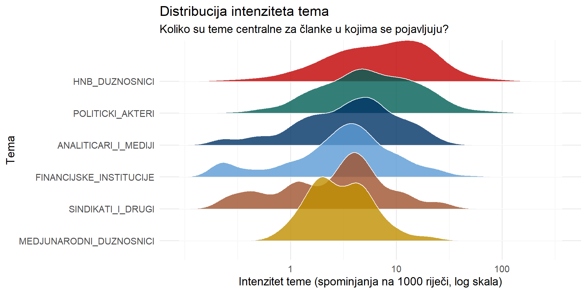
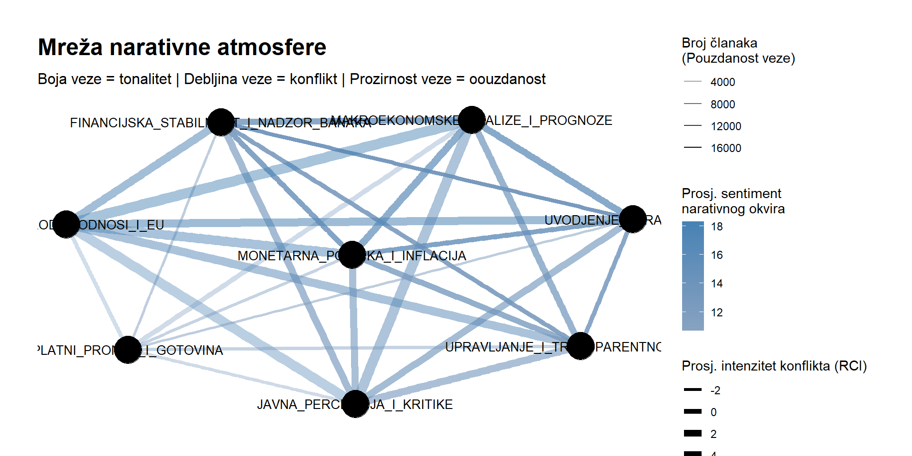

Operativna razina
Medijski podatci se mogu na
Pregled 20k medijskih objava o HNB pokazuje
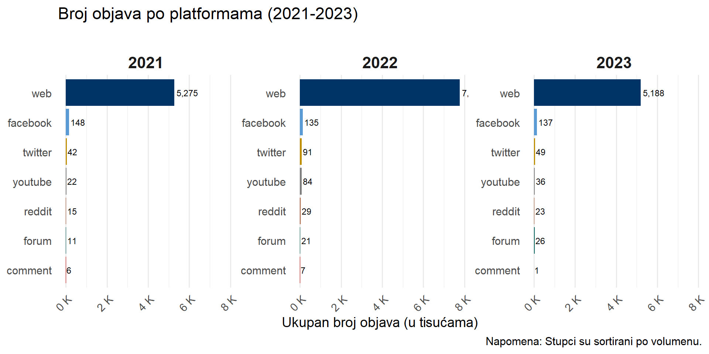


Prijedlog projekta
Kako iskoristiti postojeće podatke!
- Koncept
- Pojmovi
- Teme
- Teme II
- Teme III
- Teme IV
- Teme V
- Uokvirivanje
- Konfliktnost
- Narativi
- Dinamika I
- Dinamika II
- Platforme
- Top mediji
- Top autori
- Top autori II
- Top teme
- Top teme II
Presscut podatci za 08/2025; 190 objva i 15 karakteristika.
# A tibble: 6 × 3
doc_id Tema dominant_topic
<int> <chr> <chr>
1 1 Podaci HNB - Dobit banaka MAKROEKONOMSK…
2 2 Inflacija MONETARNA_POL…
3 3 Inflacija MONETARNA_POL…
4 4 Guverner HNB-a B. Vujčić gost gost podcasta Bobu Bob! V… MONETARNA_POL…
5 5 Guverner HNB-a B. Vujčić gost gost podcasta Bobu Bob! V… MONETARNA_POL…
6 6 Guverner gost u emisiji 'bobu bob' MONETARNA_POL…# A tibble: 6 × 3
doc_id Autor dominant_topic
<int> <chr> <chr>
1 1 Domagoj Juričić HNB_DUZNOSNICI
2 2 Hina Nema Teme
3 3 Autor inicijalima Nema Teme
4 4 Igor Bobić HNB_DUZNOSNICI
5 5 Igor Bobić HNB_DUZNOSNICI
6 6 Igor Bobić HNB_DUZNOSNICI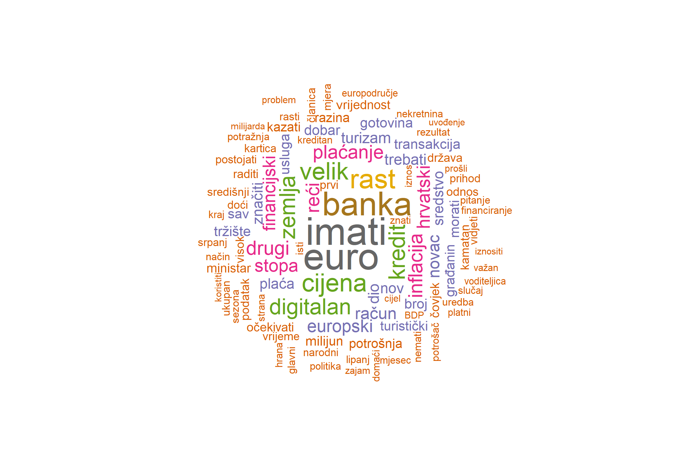

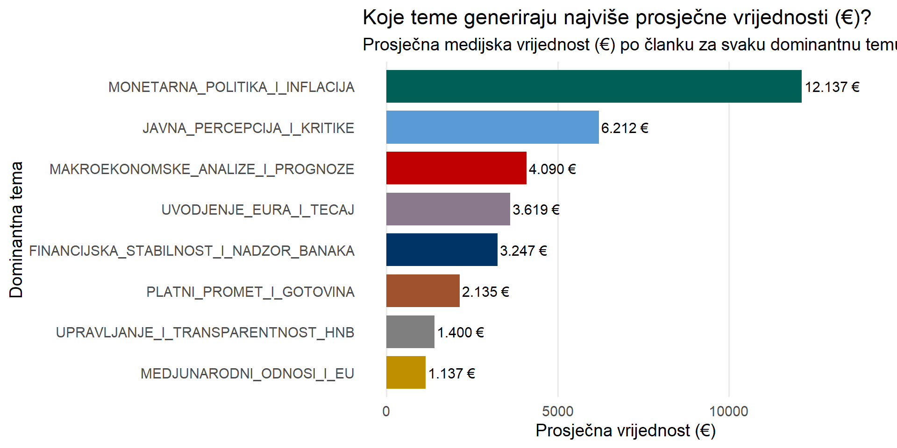
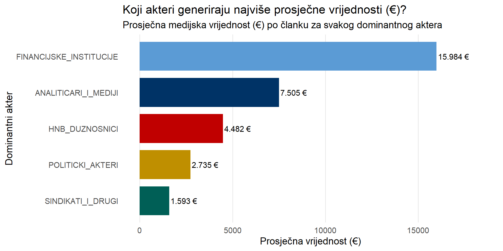
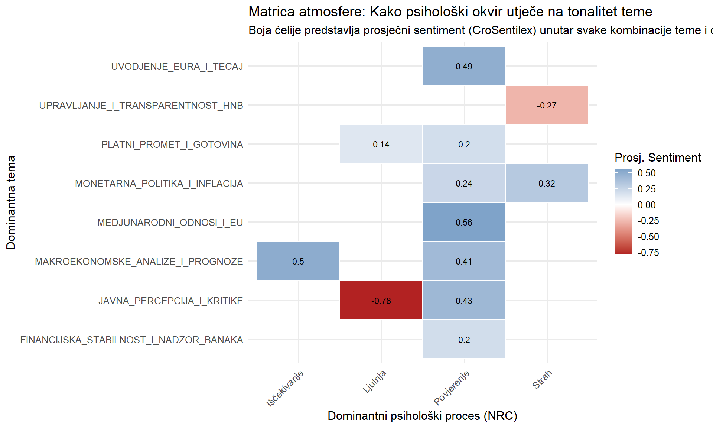
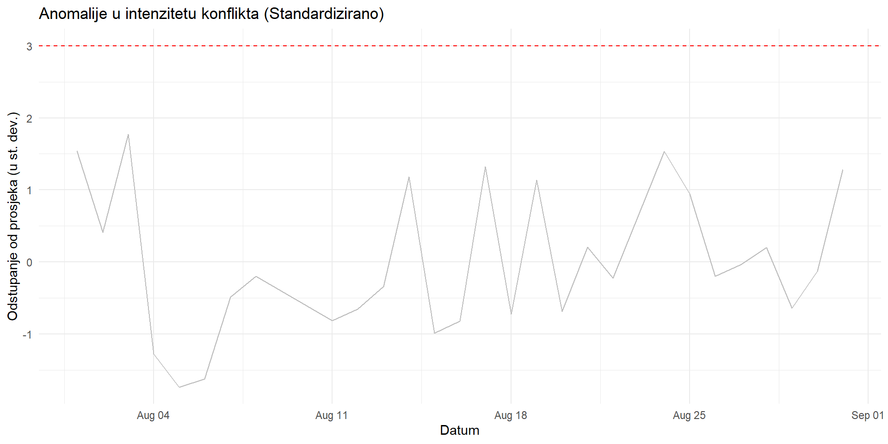
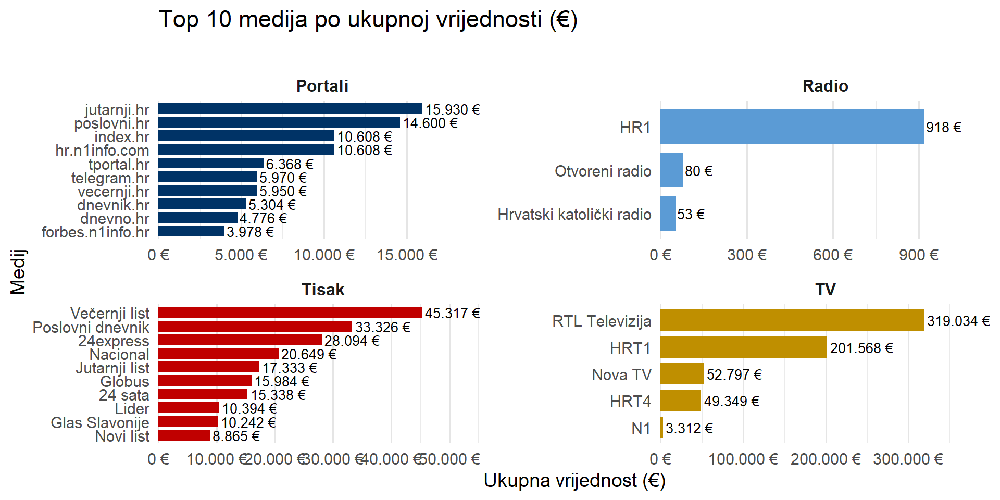